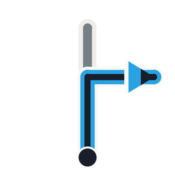

A rally-raid roadbook is a scroll of tulip boxes. There's no GPS line — you match each box to the terrain using distance and a compass heading. Here's how to read one.
Anatomy of a box

The tulips
One diagram per junction, always drawn travel-up. The ball is your entry; the arrow is the exit.
CAP — the compass heading
CAP is the bearing to follow out of the box: 0°=N, 90°=E, 180°=S, 270°=W, clockwise. After each turn you settle onto the new CAP and hold it until the next box. In low visibility, CAP + distance is all you have.
ICO — the trip meter
Two distances: TOTAL (whole stage) and PARTIAL (since the last box, reset at each one). You drive the partial on the meter, and the next junction appears right where the book says it will.
Pictograms & danger
Boxes carry warning + terrain signs. Danger escalates ! → !! → !!!. A few you'll meet:
How to ride it
- Read the next box: distance to it, the tulip shape, the CAP to leave on.
- Drive the partial on the trip meter while watching the terrain.
- At the junction, take the tulip's exit and settle onto the new CAP — then reset partial and repeat.
The skill is trust: when unsure, ride the distance and the junction reveals itself.